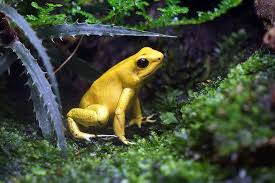

En Colombia, el colibrí también hace parte de las tradiciones. El pueblo Desana del Vaupés dice descender del colibrí y piensa que al morir vuelve a ser colibrí. Pare ellos su zumbido es expresión de amor, belleza y alegría.
Phyllobates terribilis
Rana Dorada

La rana dorada venenosa, rana dardo dorada o rana de dardo venenosa es un anfibio anuro de la familia Dendrobatidae endémica de la costa pacífica colombiana. Este anfibio es actualmente considerado el animal más tóxico y venenoso del mundo.
Fauna y Flora de Colombia
Colombia cuenta con más de 1.800 especies de aves, 470 de mamíferos, 520 de reptiles y más de 750 de anfibios. En cuanto a la flora, ¡el 10% de las especies vegetales del mundo crecen en Colombia! Un número impresionante, que hace de Colombia un lugar de naturaleza variada e impresionante.